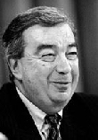

[Temaside] [Faktaservice nr. 6]
Faktaservice nr. 6 95/96, JANUAR 1996RUSSLAND ETTER VALGET:
Russlands nye utenriksminister, Jevgenij Primakov, vil prioritere forholdet til nabolandene, de tidligere sovjetrepublikkene. 
Jeltsins reformiver avtar Så var det ingen igjen. Etter president Boris Jeltsins store utskiftninger i regjeringen er den siste reform-mann fra 1991-laget borte. De gamle og konservative har fått overtaket.
Siste mann ut var første visestatsminister Anatolij Tsjubais, som 16. januar valgte å kaste inn håndkleet.
- Etter å ha fått høre om den sterkt negative vurdering av mitt arbeid, har jeg bestemt meg for å innlevere min avskjedssøknad, sa Tsjubais, som har stått for den største privatisering i verdenshistorien og på en måte var en siste garantist for at de russiske reformene ville fortsette.
Men det var etterhvert blitt åpenbart at han var en enslig svale, og at mange politiske hauker ønsket å fjerne også ham. Overraskelsen var derfor ikke så stor, med en rekke utskiftninger av kjente liberalere på forhånd, var det bare et spørsmål om tid før også Tsjubais måtte gå. De siste ukene har hodene rullet stadig fortere, og de nye hodene som er kommet til, utmerker seg ikke ved å være utpregede liberalere. Presidentens stabssjef, Sergej Filatov, er skiftet ut med tidligere nasjonalitetsminister Nikolaj Jegorov, en kjent tilhenger av den harde linje. Ettersom stabssjefen styrer presidentens administrasjon, som er blitt større enn det gamle sentralkomitéapparatet i sovjetisk tid, har han stor makt. Han kontrollerer også presidentens representanter i forskjellige fylker og republikker, og vil kunne få avgjørende innflytelse på hvordan en gjenvalgskampanje av Jeltsin kommer til å bli ført.
Utenrikspolitikken
Utenriksminister Andrej Kosyrev sitter nå som Murmansk-representant i Dumaen. I hans sted er den tidligere etterretingsmannen Jevgenij Primakov (66) kommet. Og han har allerede signalisert at Russlands utenrikspolitiske prioritet er det nære utland, det vil si eks- sovjetiske republikker. Forholdet til Vesten får komme i annen rekke.I tillegg kommer en rekke andre utskiftninger som bærer bud om det samme: Jeltsin har satset på personer som tilhører den gamle garde. Dette er åpenbart et ledd i den valgkamptaktikken presidenten og hans stab har lagt opp. Ved å fjerne politikere i den nasjonal- kommunistiske opposisjonen, håper han å vinne over de misfornøyde som ga nettopp de nasjonal-kommunistiske partiene fremgang ved valget i desember.
50% til moderate partier
Men mange politiske observatører mener at Jeltsin, ved å satse på en ny hest, kommer til å tape. For som Jegor Gajdar, hans tidligere forbundsfelle, og leder av reformene, har påpekt, stemte tross alt rundt 50 prosent på demokratiske og moderate partier, selv om valgsystemet har gitt kommunistene en stor overvekt i den nye Dumaen, med 157 av de 450 plassene. Gajdar sa til avisen Segodjna at det ikke har vært noen katastrofale virkninger av reformene. - De katastrofale virkningene skyldes 70 års kommunistisk diktatur og den statlige bankerott som kommunistene inntil 1991 førte et svært rikt land mot, sa Gajdar.Den kommunistiske Dumaen kommer heller ikke til å gi Jeltsin lett spill. Den nye formann er Pravdas tidligere sjefredaktør Gennadij Selesnjov (48), som fortsatt er kommunist. I tillegg kommer partiet til å kreve, og få, både komitéformenn og andre poster som er viktige både i offentlig debatt og i det politiske arbeid. Det kan bli harde måneder for Jeltsin. Og over ham henger Tsjetsjenia . . .
Kilde: Reuter og Kjell Dragnes, Aftenposten
[Innhold] [Info] [Aftenposten hjemmeside] [Til Fakta hovedside]